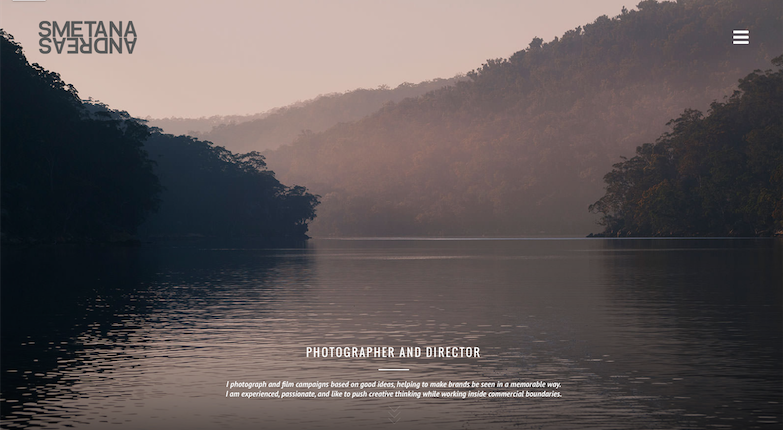

Weekly Websites
HomeThe designs simplicity makes this website successful. I like the grid layout of all of the photographs on the homepage and it's easy to use scrolling function. I feel like it's a website with simple navigation that's user friendly for everyone.

The front page isn't too busy and I love how the logo is nicely displayed. I like the vertical scrolling function and how it's easy to figure out. The hover animation over the "view project" commands are really cool as well.
This website is artistically awesome. The moment you enter the website, you see a lot of different animations. The viewer see's a collage of black and white photos that fill the screen like a checkerboard. When you click on an image, it navigates to the image in color in an interesting way. This website might be too busy for some, but for me it's a work of art.